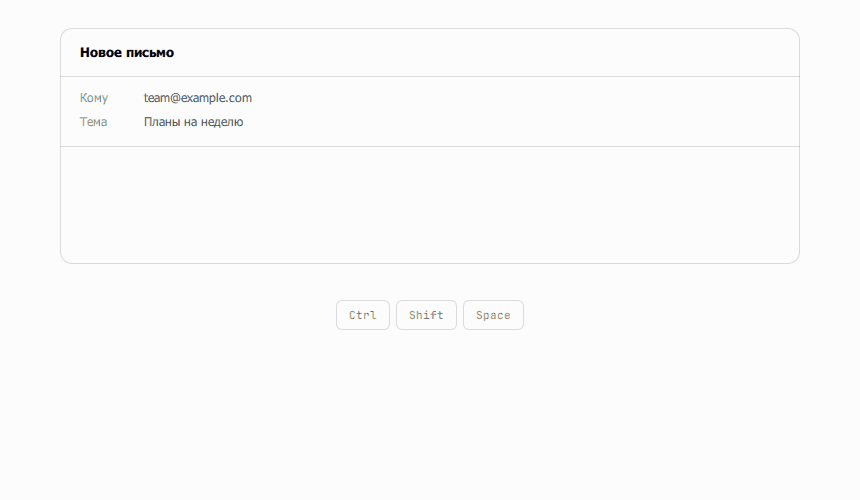
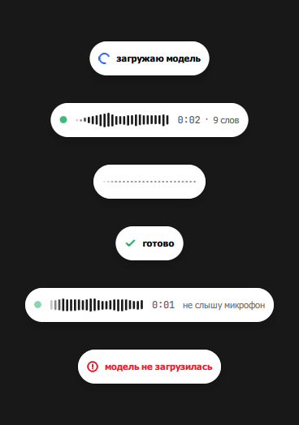
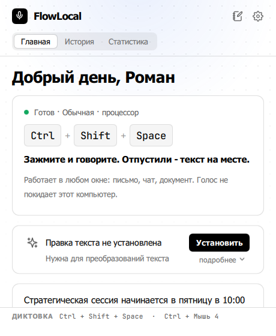
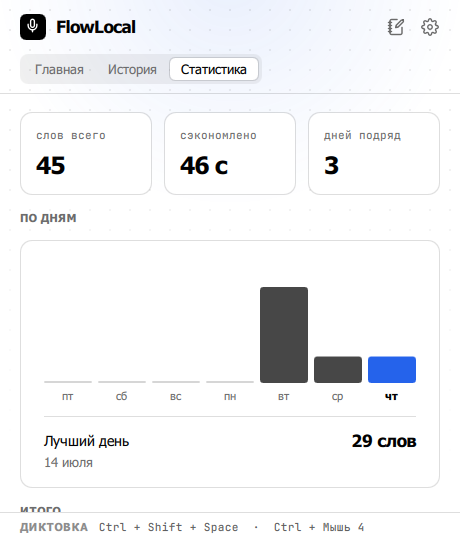
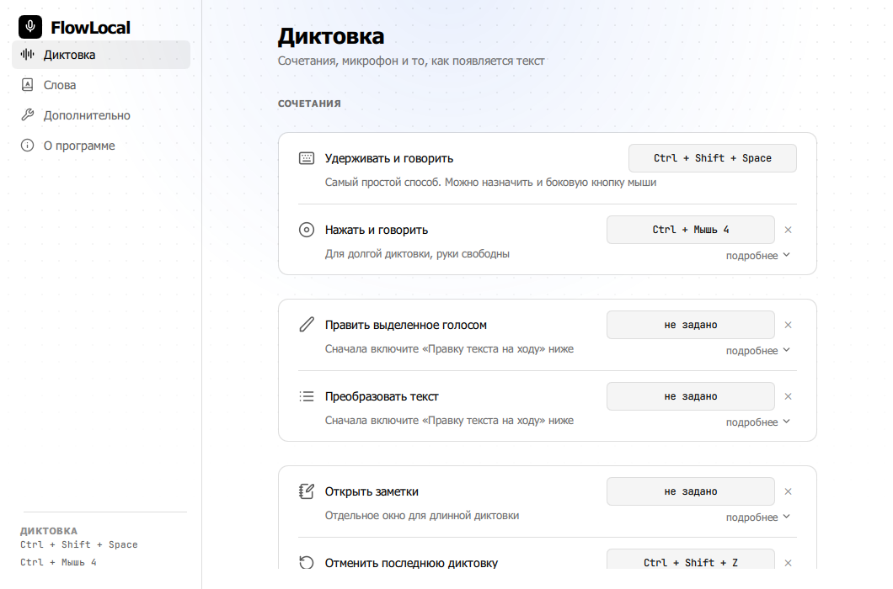
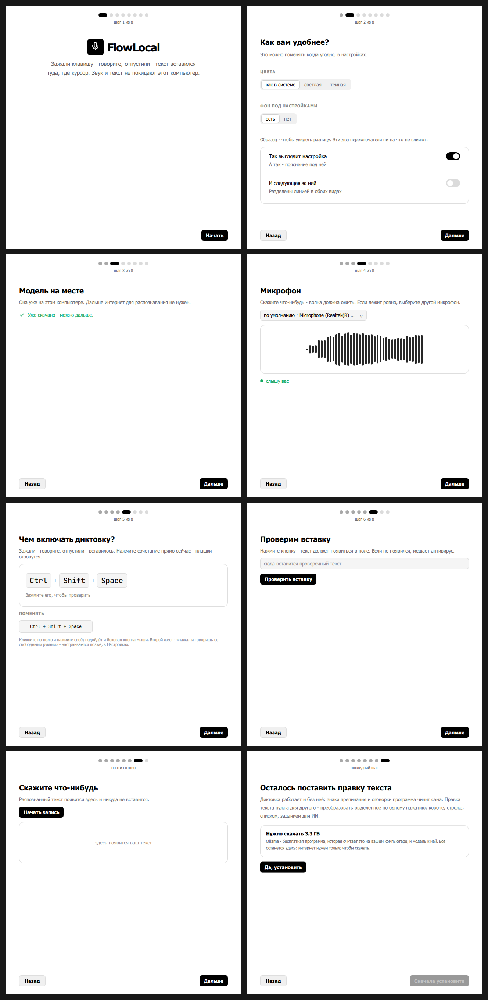

Зажали клавишу - говорите. Отпустили - текст уже в том окне, где вы и печатали. Голос не покидает этот компьютер: не потому что мы обещаем, а потому что некуда.
70 МБ · без прав администратора · бесплатно и с открытым кодом

Все локальные диктовки возят Whisper, а он хорош не на всех языках. Мы возим GigaAM от SberDevices - модель, обученную на 700 000 часах русской речи. На русском она понимает заметно больше слов.
Из ста слов мы разберём девяносто одно, Whisper - восемьдесят четыре. То есть ошибок вдвое меньше.
Замер не наш и не Сбера: одиннадцать наборов записей, независимый стенд, который ведёт автор Vosk - конкурирующей модели, проигравшей в этом же сравнении. Свидетельство против собственного интереса, и потому мы приводим именно его. Сбер про свою модель сообщает разрыв больше нашего, но проверить его нечем, поэтому мы его не повторяем.
У Whisper есть фирменная болезнь: на паузах он дописывает «Спасибо за просмотр!» и прочее из субтитров, которых наслушался. Лечат это отдельным детектором речи. У нас лечить нечего - RNN-T нечем выдумывать: у него нет авторегрессивного декодера. Проверено: цифровая тишина, шум, гул, щелчок - на выходе пусто.
Внизу экрана - пилюля: живая волна, таймер и число слов. Счётчик растёт, пока вы ещё говорите, потому что программа разбирает речь на ходу, а не после клавиши. Ждать после отпускания почти не приходится: пятнадцать минут диктовки готовы примерно за то же время, что и полминуты.

Курсор остаётся там, где вы печатали, - иначе ваш Ctrl+V уехал бы не в то окно. Пилюлю можно утащить мышью куда удобно, двойной клик вернёт на место.
Микрофон молчит - на пилюле так и написано. Выбранный микрофон отвалился - пишем с системного и сообщаем об этом там же.
Удерживать и говорить или нажать и говорить со свободными руками. Любое из двух может быть боковой кнопкой мыши. Esc выбрасывает запись.
Распознать - половина дела. Дальше начинается то, за что конкуренты берут 15 долларов в месяц. Почти всё это работает правилами: без модели, без скачивания и без задержки.
«Ну вот, короче, я думаю, типа, надо сделать» → «Я думаю, надо сделать». Ноль мегабайт, ноль задержки - и ни одного шанса потерять слово: мы ничего не сочиняем, только вычёркиваем.
«Встреча в пятницу, нет, в субботу» → «Встреча в субботу». Тоже правилами. Из 34 случаев в тестах 16 - ловушки: «денег нет, но вы держитесь» и «у книги нет обложки» остаются нетронутыми.
Запятые ставятся сами, за сотые доли миллисекунды. Сложные фразы разберёт обученная модель на 30 МБ - она необязательная и качается кнопкой.
«Ты придёшь» и «Ты придёшь?» - одни и те же слова, разница только в голосе. Голос у нас есть: запись никуда не делась.
Фамилии и названия чинятся по написанию, ваши падежи не трогаются. Сотня технических слов включается одним переключателем: «джейсон» станет JSON, «пул реквест» - pull request.
Программа замечает, что вы повторяете, и предлагает дать этому короткую фразу. Имя придумываете вы - только вы знаете, «моя почта» это или «рабочая».
«С новой строки», «нажми энтер» - переносы и Enter, сказанные вслух. В мессенджерах диктовка может сама заканчиваться отправкой.
Своим сочетанием, ровно то, что вставилось. И только если вы после этого ничего не печатали - иначе это была бы уже ваша работа.
Преобразования работают с текстом, который уже написан - хоть вами, хоть не вами. Готовых десять: короче, строже, проще, списком, письмом, по шагам, техзадание, только ошибки, задание для ИИ, на английский. Ненужные прячутся переключателем, чтобы не искать своё среди чужого.
Слева название, справа что сделать с текстом - словами, как объяснили бы человеку. Указание уходит в модель как есть: переписывать вашу формулировку под свой формат мы не будем.
Выделили, зажали сочетание, сказали «сделай короче» - выделенное заменилось. То же самое, но указание каждый раз своё.
Отдельное окно, куда диктуют длинно, не целясь в чужое поле. Сохраняется само, ищется по словам, приводится в порядок одной кнопкой.
Преобразованиям и правке голосом нужна Ollama - бесплатная программа, которая работает на этом же компьютере. Ставится одной кнопкой: FlowLocal скачает её, установит, заберёт модель и включит. Дальше интернет не нужен.
Раньше всё жило в одном окне на весь экран, и человек, зашедший посмотреть надиктованное, попадал в комнату с приборной панелью. Теперь главное окно маленькое, открывается кликом по значку в трее и отвечает на три вопроса: работает ли, что сделала, сколько всего.


Настройки уехали в своё окно, за шестерёнку. Четыре страницы вместо шести: редкое ушло на «Дополнительно» и называется там по симптому - не «Как вставлять текст», а «Текст не появляется в этой программе?».

Оформление, модель, микрофон с живой волной, ваше сочетание, проверка вставки и проба голосом: первый текст вы увидите ещё в мастере, никуда его не вставляя. Сверху написано, на каком вы шаге, - «шаг 3 из 8», а не восемь одинаковых точек.
Кнопки «пропустить» нет намеренно: диктовка, жеста которой вы не знаете, - это диктовка, которая не работает.

Каждая из них появилась потому, что однажды помешала.
Переключается на лету, окно перерисовывается само. Распознавание остаётся русским: английский нужен, чтобы отдать программу тому, кто по-русски не читает.
На время диктовки. Если музыка не играла - она и не заиграет: возвращаем только то, что сами остановили.
Вторая фраза сразу за первой приклеится правильно: пробел и без заглавной посреди предложения. Не после точки, не в другом окне, не через полчаса.
Словарь, подстановки и сочетания - в файл и обратно на другой машине. Загрузка добавляет, а не затирает.
Последняя запись остаётся в памяти: если что-то пошло не так, распознайте её заново. Нераспознанное не пропадает.
Программа сама видит новый выпуск и ставит его. Список изменений - в окне «О программе», и читается он без интернета.
Это не обещание в политике конфиденциальности, а устройство программы.
В программе нет ни аккаунта, ни сервера, ни адреса, куда слать. Интернет нужен дважды: скачать модель и проверить обновления.
Лежит файлом рядом с программой. Можно выключить совсем, можно выгрузить и унести, можно очистить одной кнопкой.
Лицензия MIT. Не верите на слово - читайте, собирайте сами.
Диктовка сегодня работает на Windows. macOS - в работе, и об этом честно ниже.
Windows 10 или 11. Установщик 70 МБ, без прав администратора и без окна UAC.
Скачать для WindowsПорт готовится. Диктовать на Маке пока нельзя: хоткей и вставка там ещё не работают - это отдельный большой заход, а не выходные. Собрать из исходников и посмотреть на интерфейс на Маке уже можно, но диктовка останется мёртвой до конца порта.
Собрать из исходниковЧто именно предстоит переписать - в аудите порта. Когда диктовка на Маке заработает, здесь появится кнопка «Скачать для macOS».